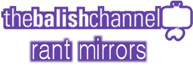

Last Updated: ...
"TheBalishChannel" has been known for hosting many rants on his livestreams. However, Balish doesn't usually reupload most of these rants to sources other than Twitch. The champ Abomdosnow usually highlights most of these rants, but sometimes the videos become so hated that he either is forced to privatize them, or YouTube ends up taking down the videos entirely. This has caused the rants to be extremely saught after.
This makes it hard for Youtube Poopers or fans of TheBalishChannel to find what he's most known for.
However, fret not! A few people have created accounts for the sole reason of reuploading some of Balish's greatest rants.
These few accounts specifically host BalishChannel content...
A fledgling channel hosted by C3po345(1) posed as the Italian branch of a iOS casino-app company.
These are all the current rants that are archived, saved, or reuploaded.
~ANIMATEDJAMES~
This video is highly saught after, and yet it is one of the most reuploaded.
Both Video Brinquedo Multinational and PokieMagic Italia have this video on their channels.
This is not the full version of "the rant". In fact it is far from it.
This is not the full stream. Both channels start off as soon as Balish begins to read off the first Hailey Flower comic.
This video has a beta version of Balish's final rant on AnimatedJames, along with a mini-rant about a character named "Dr. Wolf".
This video can be found as a highlight on TheBalishChannel's Twitch account. However, Abomdosnow has a Youtube upload as well.
This is not the full version of "the rant". It is only a preview.
This video is a recording of a panel James did at a brony-con. In it, he made a joke towards a user named LeekFish about rape.
This video is on Abomdosnow's channel under a hidden Twitter link.
Note: AnimatedJames has reuploaded the video, but it removes the portion involving LeekFish.
This video is Balish's commentary on AnimatedJames' "Middle Ground" comic.
Currently, it's exclusive to Video Brinquedo Multinational.
Video Brinquedo Multinational (No Chat): Middle Ground
~MR. ENTER~
This is Balish's full commentary on the user known as "Mr. Enter".
This video is on both Abomdosnow's channel under a VERY hidden Twitter link and PokieMagic Italia.
Abomdosnow's mirror has had an age restriction by YouTube, and as such you cannot watch it directly without signing in.
This is Part 1 of Balish's rant. This starts off at when Balish talks about Mr. Enter's Teen Titans Go review.
Currently, it is on Abomdonow's channel, along with all the other parts.
Abomdosnow:
This is Part 2 of Balish's rant. This should start off when Balish is showing off MFGG.
Currently, it is on Abomdonow's channel, along with all the other parts.
Abomdosnow:
This is Part 3 of Balish's rant. This includes the rant about Mariotehplumber.
Currently, it is on Abomdosnow's channel, along with all the other parts.
Abomdosnow:
~OTHER RANTS~
This is a rant directed towards a user named "Chadtronic". It's a rant about his "Mario Teaches Typing" video.
Currently, it is on Abomdosnow's channel.